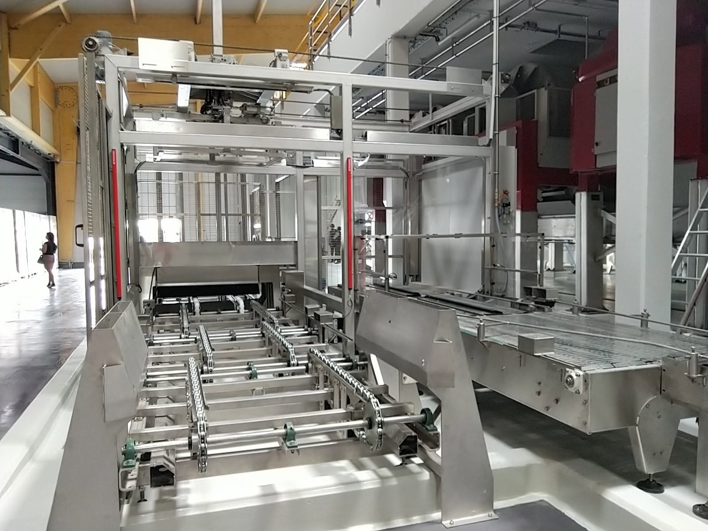

Experts en performance de chargement de pressoirs, convoyeurs, maintenance industrielles & viticoles et projets sur mesure.
ADB Process Industriels & Viticoles accompagne les professionnels du secteur viticole et industriel en maintenance, dépannage, SAV, pièces détachées et amélioration d'équipements.
Fort de plus de 15 ans d'expérience en conception et fabrication de machines, nous apportons des solutions rapides, fiables et adaptées à chaque contrainte de terrain.
Notre mission : rendre votre outil de production plus agile, plus économe et plus performant.
Après des années de travail passionné et d'interventions au plus près de nos clients, ADB perpétue aujourd’hui l'héritage et l'exigence technique qui ont forgé notre réputation.
Ce chemin parcouru côte à côte, guidé par les mêmes valeurs d'entraide, de rigueur et d'écoute, continue d'animer chaque projet que nous menons.
Je poursuis avec fierté cet engagement fondamental : être à vos côtés à tout moment, avec la même grande réactivité pour assurer la continuité et la sérénité de vos exploitations.
Au-delà de la maintenance et du dépannage, l'entreprise conserve aujourd'hui une maîtrise technique rare et précieuse : l'expertise exclusive en conception, ajustement et optimisation du chargement de pressoirs.
Grâce à la parfaite maîtrise des outils de CAO (SolidWorks, AutoCAD) et de l'automatisme, nous restons votre unique référent pour :

Contactez-nous pour discuter de vos besoins industriels et viticoles.
Accéder à la page Contact